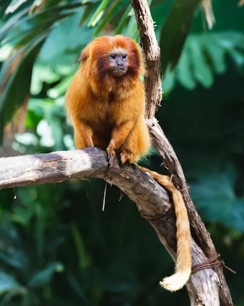
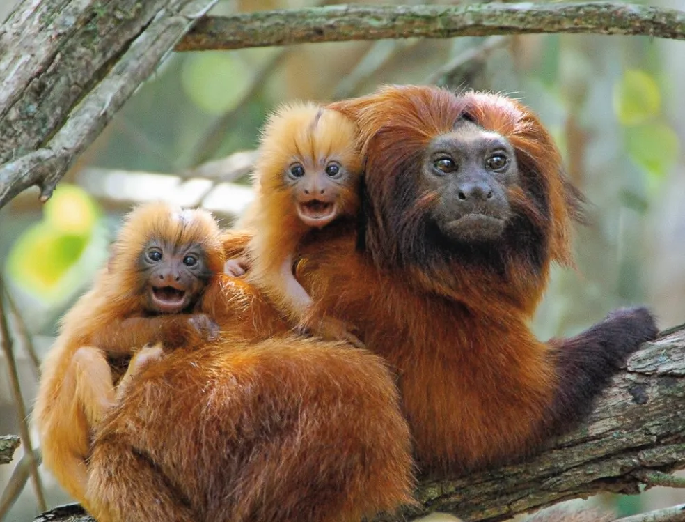

Mico-Leão-Dourado
família Callitrichidae e gênero Leontopithecus
Mico-leão-dourado é um mamífero que vive exclusivamente na Mata Atlântica, eles têm pelos com tons variados de dourado e cauda comprida. Possuem dedos muito compridos que facilitam a captura de pequenas presas em locais escondidos. São onívoros, se alimentando de uma grande variedade de frutas, além de artrópodes e pequenos vertebrados.
São animais de hábitos diurnos, mais ativos nas primeiras horas do dia, quando caçam e realizam suas atividades. Dormem à noite em buracos nos troncos das árvores, nas partes mais altas. Nos grupos há geralmente um casal ou uma fêmea e dois machos e os filhotes, que nascem nos meses de setembro ou outubro.

Existem quatro espécies de micos-leões, que apresentam diferentes características e vivem em regiões separadas, mas todos são endêmicos da Mata Atlântica. São eles: Mico-leão-da-cara-dourada (Leontopithecus chrysomelas) vive na Bahia, Mico-leão-preto (Leontopithecus chrysopygus), encontrado em São Paulo, Mico-leão-da-cara-preta (Leontopithecus caissara), vivem em pequena área no sudeste de São Paulo e no Paraná.
"Cada macaco no seu galho"
- Descobertas: há 258 anos
- Tipo: Primata
- Idade média: 8 a 15 anos
- Peso: 500 a 600g dependendo da espécie
- Família: Leontopithecus rosalia
Segundo a "Lista Nacional Oficial de Espécies da Fauna Ameaçadas de Extinção”, publicada em 2014 pelo Ministério do Meio Ambiente, o mico-leão-dourado encontra-se em perigo de extinção (EN). Nos últimos trinta anos aumentou o número de animais na natureza, e segundo dados da Associação Mico-Leão-Durado, estimasse que haja cerca de 2.500 indivíduos distribuídos em fragmentos do seu habitat natural.